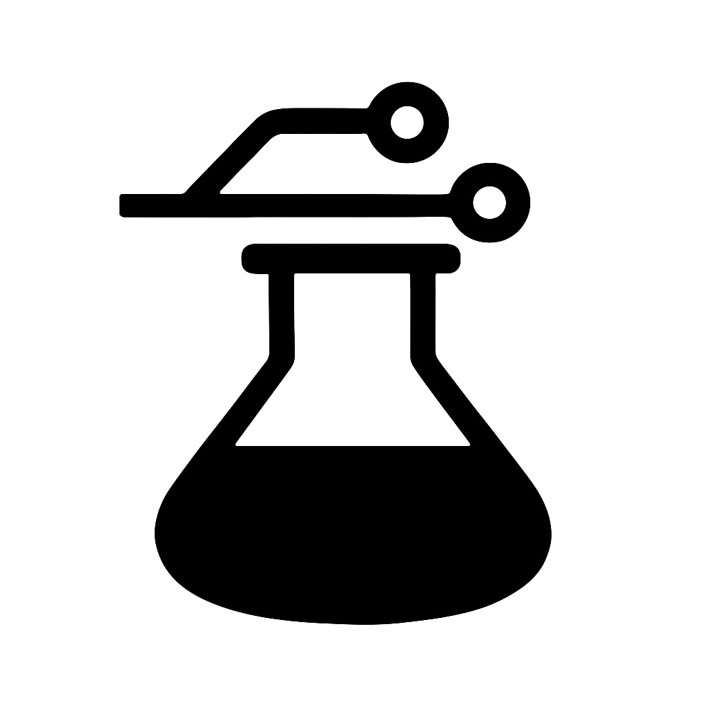

Sector F Labs: Thoughtful Software for a Human Future
Sector F Labs is a personal workshop dedicated to building purposeful, privacy-first software. Our approach is inspired by the spirit and outcomes of Bell Labs—where open, creative collaboration shaped not just technology, but the very philosophy of how to build it.
We believe in creating tools that adapt to you, prioritizing simplicity, thoughtful engineering, and user-respectful design. Our work is guided by the conviction that the best software emerges from environments that foster curiosity, autonomy, and a relentless pursuit of clarity.

Engineering with Intention
We believe the best tools quietly do their job. Every design decision should serve a clear purpose: focused systems that do one thing well—and make it feel effortless. No flashy features, no clutter.
Simplicity over Flash
We don't chase trends or build for "wow." We build for longevity. That means stripping away the unnecessary to reveal the essential—refining complexity into elegance and meaning.
Standards First, but Roll When Needed
We favor open standards for interoperability and resilience. But we're not afraid to build from scratch when standards fall short or third-party libraries add too much bloat. We prefer understanding every byte we ship.
Human-Centered Systems
Sector F Labs puts people first: designing tools that respect your privacy, respond to your context, and feel natural to use. We imagine a future where software supports, listens, and learns.
Software That Belongs to You
Your software should adapt to your workflow, your pace, your needs. At Sector F Labs, we believe technology should feel like it belongs to you—because it does.
Anti-DRY (When It Matters)
Overusing "Don't Repeat Yourself" can lead to fragile, overly abstracted code. We're okay with a little duplication if it means clarity, autonomy, and flexibility. Good abstractions should earn their keep, emerging naturally, not imposed prematurely.